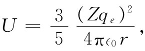
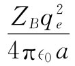

现在我们将考虑原子物理中另一个有关静电能的例子，也就是原子核的电能。但在此之前，还得对核中把质子与中子维持在一起的主要力（叫核力）的某些性质加以讨论。在发现核——以及构成核的中子和质子——的初期，人们曾希望，对于比如质子与质子间的非电部分的强作用力，会有某个简单的定律，如电的平方反比定律。因为一旦人们确定了这个力学定律，以及相应的有关质子与中子、中子与中子间的力学定律，对这些粒子在核中的全部行为就应该能在理论上给予描述了。因此，关于研究质子散射的宏大计划启动了，希望借此找到质子之间作用力的定律，但经过了30年的努力，完全没有任何结果。有关质子与质子间作用力的知识已经积累了相当多，但却发现，这种力可能要多么复杂就有多么复杂。
所谓“可能要多么复杂就有多么复杂”，我们指的是该力取决于应有尽有的许多东西。
首先，核力并非两质子间距离的简单函数。在距离大时它是吸引力，而在距离较小时则是排斥力。这种与距离的依赖关系，仍然未能完全搞清楚。
其次，核力依赖于质子自旋的指向。凡是质子都有自旋，而任何两个相互作用着的质子都可能以同向或反向的角动量自旋着。当两自旋平行与反平行时，如图8-6（a）和（b）所示，两者的作用力是不同的。这差别很大，并不是一个微小效应。
第三，当两质子间的间隔在平行 于它们的自旋方向上，如图8-6（c）和（d）时，与当间隔在垂直 于自旋方向上，如图中的（a）和（b）时，力的差别也相当大。
图8-6 作用于两质子间的力取决于每一个可能参数
第四，如同磁现象一样，核力依赖于质子的速度，只是这依存关系比起磁的情况来要强得多。而且，这个与速度有关的力并不是一种相对论效应。即使在速率远小于光速时，它仍然相当强。此外，这一部分力除了与速度大小有关外还依赖于其他东西。例如，当一质子在另一质子附近运动时，其轨道运动与自旋的转动方向同向，如图8-6（e）所示，与其轨道运动和自旋转动反向的如图8-6（f）所示，这力是不同的。这叫作核力的“自旋轨道”部分。
在质子与中子间、中子与中子间作用力也同样地复杂。迄今为止，我们还不知道这些力后面的机制——也就是任何理解它们的简单途径。
可是，存在一个重要方面，核力比其可能有的性质较为简单 。这就是，两个中子间的核 力与质子与中子间的核力彼此相同，与两质子间的核力相同！在任何核作用的情况中，如果我们用一个中子去代替质子（或者相反），核的相互作用 不会改变。这种相等性的“基本原因”还不清楚，但它是也可以推广到其他强相互作用粒子——诸如π介子及“奇异”粒子——的相互作用定律去的重要原理的一个例子。
图8-7 11 B和11 C的能级（以兆电子伏数计）。11 C的基态比11 B的要高出1.982MeV
这一事实可用相似的核中各能级的位置漂亮地显示出来。考虑一个像11 B（硼11）的核，它是由5个质子和6个中子构成的。在这个核中这11个粒子以最复杂的舞蹈方式互相作用。现在，在所有可能的相互作用中存在一种具有最低可能能量的组态，那就是核的正常态，称为基态 。如果核被扰动（比方说受一高能质子或其他粒子的撞击），它将跃迁到称为激发态 的其他任何一个组态上去，每一激发态都将有一个高于基态的特征能量。在核物理研究中，像在利用范德格拉夫起电机［例如在加州工学院的凯洛格（Kellogg）和斯隆（Sloan）两实验室］所做的研究中，这些激发态的能量以及其他性质都可以由实验加以测定。关于11 B的15个已知的最低激态的能量表示在图8-7左边的一维图表上，那根最低的水平线代表基态。第一激发态拥有高于基态2.14 MeV的能量，第二激态则有比基态高出4.46 MeV的能量，如此等等。核物理的研究试图对这一相当复杂的能量图案找到解释，然而直到如今，关于这种核能级的完整而普遍的理论却还未找到。
如果把11 B中的一个中子换成质子，则会得到一个碳的同位素11 C的核。这11 C的最低16个激态的能量也已测量出来，它们被描画于图8-7中的右边（虚线表示那些实验结果尚属可疑的能级）。
看看图8-7，我们便知道，在这两种核的能级图案之间存在着惊人的相似性。第一激态位于基态之上约2MeV处。从第一激发态到达第二个激发态有一个大小约为2.3MeV的能隙，然后仅以一个大小为0.5MeV的小跳跃就到达第三激发态。在第四至第五个能级间又再有一个大的跳跃；可是在第五与第六两能级之间则只有0.1MeV的小间隔了，如此等等。在约第十个能级之后，这种对应性似乎消失，但若用其他的规定特性——诸如角动量以及凡足以使其额外能量遭到损失的东西——来标明能级的话，则这种对应性就仍可以见到。
在11 B和11 C的能级图案间的惊人相似性肯定不仅仅是个巧合，它必然揭露了某个物理定律。事实上，它显示出：即使在核内的复杂情况下，用质子代替中子仅造成十分微小的变化。这只能意味着中子与中子、质子与质子之间的力必定几乎全同。只有这样，我们才会期望，拥有5个质子与6个中子的核的组态同拥有6个质子与5个中子的核的组态彼此相同。
注意，这两种核的性质还未告诉我们有关中子与质子间作用力的情况. 这两种核中的中子与质子的组合数目相同，但若比较另外两个核，比如拥有6个质子与8个中子的14 C，同拥有7个质子与7个中子的14 N，我们又会找到能级相似的对应性。因此，可以断定：p-p，n-n与p-n这三种力在它们所有的复杂性上都相同。关于核力定律竟存在这么一个意想不到的原理。尽管每对核粒子间的力十分复杂，但这三种可能不同的对之间的力却是相同的。
但某种小的差别仍然存在，能级并不严格对应. 并且，11 C基态的绝对能量（它的质量）比11 B的基态绝对能量高1.982MeV，所有其他能级在绝对能量上也高出这么多。因此，这些力并不完全相等。可是我们知道得很清楚，整个力并不严格相等. 由于每个质子都带正电荷，所以两质子之间就存在着电 力，而在两个中子之间就不存在这种电力。我们或许能够通过11 B和11 C这两种情况中质子间电相互作用不同这一事实来解释它们间的差别？或许甚至能级上其余的小差别也是由这一电效应所引起的？既然核力比电力强得那么多，电效应对于各能级上的能量就只应该有小的微扰影响。
为了核对这个概念，或毋宁说是要找出这一概念的后果如何，我们首先考虑这两种核的基态能量的差别。为选取一个十分简单的模型，我们假定核是含有Z个质子、半径为r（待定）的球体。如果认为核像一个具有均匀电荷密度的球体，那么会预料到［由式（8.7）］其静电能为
 （8.22）
式中qe 为质子的基本电荷。由于在11 B中Z为5，而在11 C中Z为6，所以它们的电能将是不同的。
然而，就具有这种小数目的质子来说，式（8.22）并不十分正确。如果假定各质子是几乎均匀地分布在球体中的各点，并计算所有这些质子对间的电能，则将发现，式（8.22）中Z2 那个量应由Z（Z-1）代替，因而能量为
若已知半径r，就可以利用式（8.23）求出11 B与11 C之间静电能的差。但我们却要倒过来计算，即利用所观测到的能量差来算出半径，假定这能量差全都起源于静电方面。
可是，这并不完全正确。11 B与11 C基态间的能量差1.982MeV还包括所有各粒子的静能——即能量mc2 。在从11 B变成11 C的过程中，我们是用一个质量较小的质子和一个电子来代替一个中子的。因而部分能量差就是一个中子与一个质子加一个电子的静能之差，它等于0.784MeV。为了用静电能来说明能量差，因而这能量差应比1.982MeV还要多，即
1.982+0.784=2.766MeV.
把这一能量数值代入式（8.23）中，便可找出11 B或11 C的半径为
r=3.12×10-3 cm. （8.24）
这个数值到底是否具有任何意义？要弄清楚这一点，我们应拿它同这些核半径的某些其他测量结果做比较。例如，可以通过观察核是如何散射快速粒子而对它的半径做另一种测量。事实上，从这样的测量已经发现所有各种核中的物质密度 都几乎相同，也就是说，它们的体积与其所含有的粒子数成正比。若令A为核中质子和中子的总数（这是一个与其质量非常接近成正比的数目），那么已经找出半径可由下式给出：
r=A1/3 r0 ， （8.25）
其中
r0 =1.2×10-13 cm. （8.26）
从这些测量结果我们发现一个11 B（或一个11 C）核的半径预期为
r=（1.2×10-13 ）（11）1/3 cm=2.7×10-13 cm.
把这一结果与式（8.24）做比较，就可见11 B与11 C的能量差乃起因于静电方面的假设是相当良好的，差异只有约15%（作为我们的第一次核计算来说，这结果并不算坏！）。
产生差异的原因可能是这样，按照对核的现代理解，偶数的核粒子——在11 B中是5个中子与5个质子——会形成一个核心 ，当另外一个粒子加入到这个核心时，它会在该核心外面绕行以形成一个新的球形核，而不是被吸收到里面去。如果是这样，对于加入质子情况我们应取不同的静电能。对于11 C比11 B超过的能量，我们应该仅仅取 ，这是在该核心之外再添加一个质子所需的能量。这个数值只不过是式（8.23）所预期的数值的5/6，所以对半径的新的预期值就只有式（8.24）的数值的5/6，该值就更接近于直接测量的值。
从结果彼此相符这一事实就可以得出两个结论。其一是，电的定律在小至10-13 cm的范围内看来仍然适用；另一是，我们已经证实了质子与质子、中子与中子以及质子与中子之间力的非电部分全都相等这一引人注目的巧合。